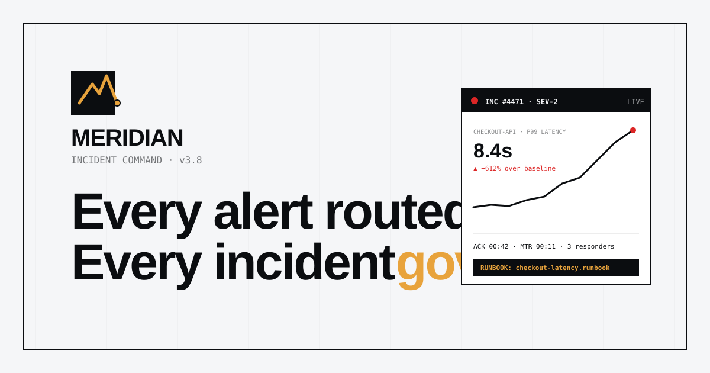

A premium single-page website for a fictional on-call platform. Neo-Industrial discipline meets Swiss Minimal restraint — hairline rules, graph-paper blueprint surfaces, Space Grotesk display type, JetBrains Mono metadata, and a hand-built incident command-surface hero.

click the frame to open the full page
/ Sections
Every section serves the on-call story — no filler blocks.
Hero
Editorial-technical split + incident command panel with live sparkline.
02Logos strip
Marquee of fictional engineering customer brands.
03Three pillars
Route · Respond · Learn — hairline-divided panels.
04Routing graph
Signal → correlate → rule → page directed-graph diagram.
05Lifecycle
Five-step incident workflow with timings + state rail.
06Outcomes band
MTTA / MTTR / noise / burnout on a dark grid.
07Proof
Featured pull-quote + secondary engineer testimonials.
08Pricing
Per-on-call-team tiers with featured Squad plan.
09FAQ
Single-open scoped accordion, ARIA + keyboard.
10CTA
Dark conversion panel with corner-tick framing.
11Footer
Five-column nav + live system status + legal.
12Navbar + menu
Sticky nav with scoped mobile menu + mono labels.
/ Design system
Palette
ink
#0B0D10
canvas
#F5F6F8
surface
#FFFFFF
panel
#EDEFF3
amber
#E8A33C
alert
#DC2626
ok
#16A34A
muted
#5C6470
Typography
Space Grotesk
display · 400–700
Inter
body · 400–700
JetBrains Mono
labels & metadata · 400–700
Geometry
1px hairlines
square radius · hard edges
Single accent
amber · signal-only
Blueprint surfaces
graph-paper grids, restrained elevation